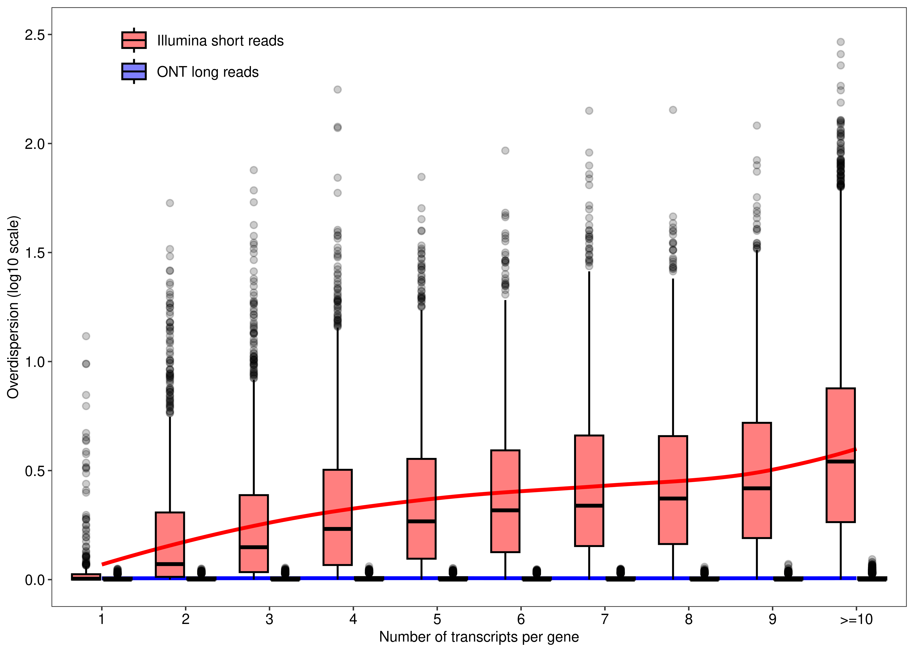
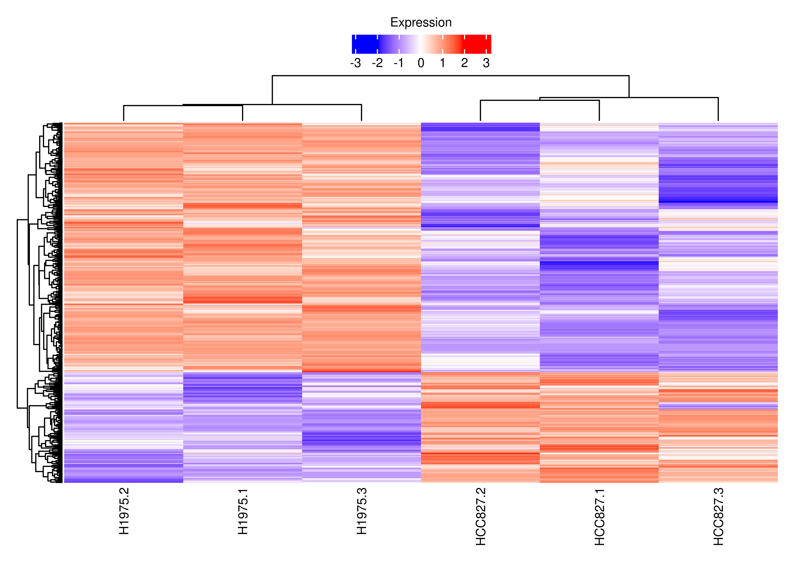
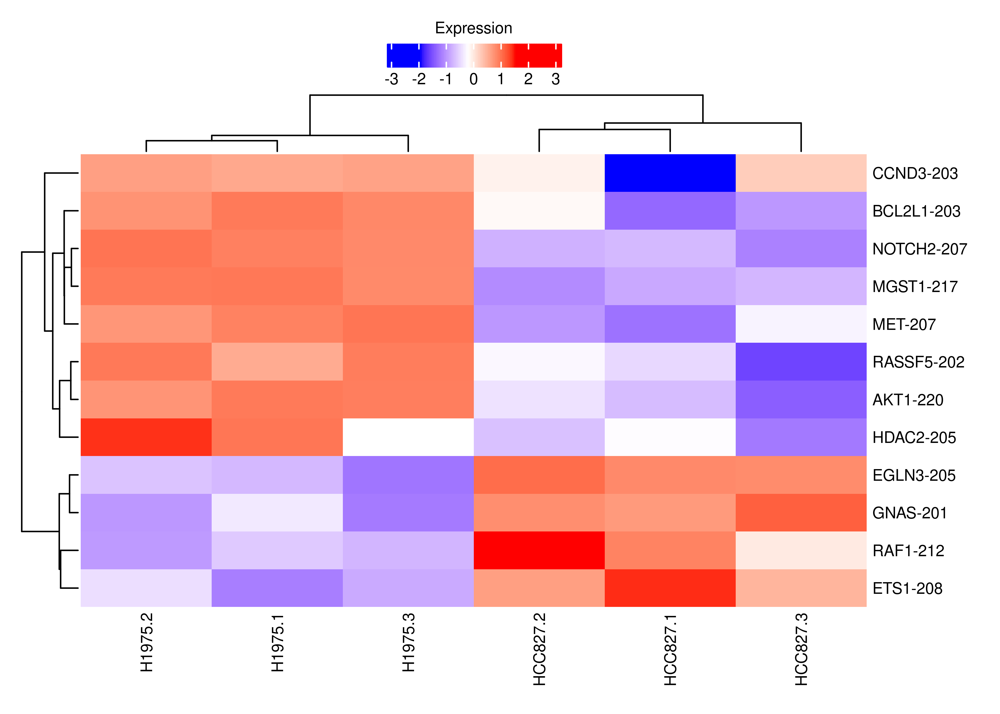

Last updated: 2023-03-30
Checks: 7 0
Knit directory:
TranscriptDE-code/analysis/
This reproducible R Markdown analysis was created with workflowr (version 1.7.0). The Checks tab describes the reproducibility checks that were applied when the results were created. The Past versions tab lists the development history.
Great! Since the R Markdown file has been committed to the Git repository, you know the exact version of the code that produced these results.
Great job! The global environment was empty. Objects defined in the global environment can affect the analysis in your R Markdown file in unknown ways. For reproduciblity it’s best to always run the code in an empty environment.
The command set.seed(20221115) was run prior to running
the code in the R Markdown file. Setting a seed ensures that any results
that rely on randomness, e.g. subsampling or permutations, are
reproducible.
Great job! Recording the operating system, R version, and package versions is critical for reproducibility.
Nice! There were no cached chunks for this analysis, so you can be confident that you successfully produced the results during this run.
Great job! Using relative paths to the files within your workflowr project makes it easier to run your code on other machines.
Great! You are using Git for version control. Tracking code development and connecting the code version to the results is critical for reproducibility.
The results in this page were generated with repository version 527c405. See the Past versions tab to see a history of the changes made to the R Markdown and HTML files.
Note that you need to be careful to ensure that all relevant files for
the analysis have been committed to Git prior to generating the results
(you can use wflow_publish or
wflow_git_commit). workflowr only checks the R Markdown
file, but you know if there are other scripts or data files that it
depends on. Below is the status of the Git repository when the results
were generated:
Ignored files:
Ignored: .DS_Store
Ignored: .Rhistory
Ignored: .Rproj.user/
Ignored: ._.DS_Store
Ignored: .gitignore
Ignored: TranscriptDE-code.Rproj
Ignored: code/.DS_Store
Ignored: code/._.DS_Store
Ignored: code/lung-se/data/slurm-10685114.out
Ignored: code/lung-se/salmon/.RData
Ignored: code/lung-se/salmon/runWasabi.Rout
Ignored: code/lung-se/salmon/slurm-10685171.out
Ignored: code/lung-se/salmon/slurm-10694099.out
Ignored: code/lung/data/slurm-10678225.out
Ignored: code/lung/index/slurm-10679764.out
Ignored: code/lung/index/slurm-10679768.out
Ignored: code/lung/index/slurm-10684814.out
Ignored: code/lung/salmon/.RData
Ignored: code/lung/salmon/runWasabi.Rout
Ignored: code/lung/salmon/slurm-10681840.out
Ignored: code/lung/salmon/slurm-10681872.out
Ignored: code/lung/salmon/slurm-10684950.out
Ignored: code/lung/salmon/slurm-10694066.out
Ignored: code/pkg/.Rhistory
Ignored: code/pkg/.Rproj.user/
Ignored: code/pkg/pkg.Rproj
Ignored: code/pkg/src/RcppExports.o
Ignored: code/pkg/src/pkg.so
Ignored: code/pkg/src/rcpparma_hello_world.o
Ignored: data/annotation/hg38/
Ignored: data/annotation/mm39/
Ignored: data/annotation/sequins/._rnasequin_annotation_2.4.gtf
Ignored: data/annotation/sequins/._rnasequin_decoychr_2.4.fa
Ignored: data/annotation/sequins/._rnasequin_decoychr_2.4.fa.fai
Ignored: data/annotation/sequins/._rnasequin_genes_2.4.tsv
Ignored: data/annotation/sequins/._rnasequin_isoforms_2.4.tsv
Ignored: data/annotation/sequins/._rnasequin_sequences_2.4.fa
Ignored: data/lung-se/fastq/
Ignored: data/lung-se/misc/._filereport_read_run_PRJNA341465_tsv.txt
Ignored: data/lung/fastq/
Ignored: data/lung/index/
Ignored: data/lung/misc/._filereport_read_run_PRJNA723287_tsv.txt
Ignored: ignore/
Ignored: misc/.DS_Store
Ignored: misc/._.DS_Store
Ignored: misc/casestudy.Rmd/._figure6.png
Ignored: misc/casestudy.Rmd/._suppfigure_maplot.png
Ignored: misc/casestudy.Rmd/._suppfigure_overdispersion.png
Ignored: misc/casestudy.Rmd/._suppfigure_venn.png
Ignored: misc/casestudy.Rmd/._supptable_gene.tex
Ignored: misc/casestudy.Rmd/._supptable_overdispersion.tex
Ignored: misc/simulation-paper.Rmd/._figure2.png
Ignored: misc/simulation-paper.Rmd/._figure5.png
Ignored: output/.DS_Store
Ignored: output/._.DS_Store
Ignored: output/lung-se/
Ignored: output/lung/
Ignored: output/quasi_poisson/
Ignored: output/simulation/
Unstaged changes:
Modified: misc/casestudy.Rmd/supptable_overdispersion.tex
Note that any generated files, e.g. HTML, png, CSS, etc., are not included in this status report because it is ok for generated content to have uncommitted changes.
These are the previous versions of the repository in which changes were
made to the R Markdown (analysis/casestudy.Rmd) and HTML
(docs/casestudy.html) files. If you’ve configured a remote
Git repository (see ?wflow_git_remote), click on the
hyperlinks in the table below to view the files as they were in that
past version.
| File | Version | Author | Date | Message |
|---|---|---|---|---|
| Rmd | 527c405 | Pedro Baldoni | 2023-03-29 | Fix KEGG link |
| html | 69e688c | Pedro Baldoni | 2023-03-29 | Build site. |
| Rmd | 0dbb402 | Pedro Baldoni | 2023-03-29 | Fix KEGG link and variable names |
| html | 69f0aa2 | Pedro Baldoni | 2023-02-25 | Build site. |
| Rmd | d52be0a | Pedro Baldoni | 2023-02-25 | Removing row names |
| html | 280d68a | Pedro Baldoni | 2023-02-25 | Build site. |
| Rmd | 86dcc05 | Pedro Baldoni | 2023-02-25 | Adding heatmaps for DE genes with iso switching |
| html | afee716 | Pedro Baldoni | 2023-02-25 | Build site. |
| Rmd | 149e445 | Pedro Baldoni | 2023-02-25 | Exporting figures and tables |
| html | 97d1c4c | Pedro Baldoni | 2023-02-24 | Build site. |
| Rmd | f298b23 | Pedro Baldoni | 2023-02-24 | Removing small cancel KEGG pathway and adding table for KRAS and CD274 genes (with references) |
| html | 9814e84 | Pedro Baldoni | 2023-02-24 | Build site. |
| Rmd | 0c56b9c | Pedro Baldoni | 2023-02-24 | Changing output type, removing # from line, and adjust figure6 dimensions |
| html | ac417e8 | Pedro Baldoni | 2023-02-23 | Build site. |
| Rmd | 1839ef1 | Pedro Baldoni | 2023-02-23 | Adding case study pages |
| html | 1839ef1 | Pedro Baldoni | 2023-02-23 | Adding case study pages |
In this page, we present the analysis of the RNA-seq experiments from the human cancer cell lines H1975 and HCC827, namely the paired-end Illumina short read RNA-seq data (GSE172421), the single-end Illumina short read RNA-seq data (GSE86337) and the long read Oxford Nanopore Technologies (ONT) data (GSE172421). This report is divided in three main parts, one for each dataset. In the end, we summarize all the results and generate the plots and tables presented in the main and supplementary materials text from the edgeR with count scaling paper.
The analysis presented in this report begins with the experimental
data already quantified by Salmon. Please refer to the
script files located in the GitHub repository of this page under the
directory paths ./code/lung, ./code/lung-se,
and ./data/lung-ont, which show the commands (or the
already prepared DGEList object for ONT data) used to
quantify the RNA-seq reads from these experiments. The
targets files from these experiments are located in the
directory paths ./data/lung, ./data/lung-se,
and ./data/lung-ont, respectively.
We begin this report by setting up some options for rendering this webpage and loading the necessary libraries.
knitr::opts_chunk$set(dev = "png",
dpi = 300,
dev.args = list(type = "cairo-png"),
root.dir = '.')library(edgeR)
library(plyr)
library(AnnotationHub)
library(data.table)
library(tximeta)
library(SummarizedExperiment)
library(fishpond)
library(sleuth)
library(patchwork)
library(grid)
library(ComplexHeatmap)
library(tibble)
library(ragg)
library(ggplot2)
library(magrittr)
library(kableExtra)Paths used in this report are specified below.
path.misc <- file.path('../misc',knitr::current_input())
dir.create(path.misc,recursive = TRUE,showWarnings = FALSE)
path.data.paired <- '../data/lung'
path.quant.paired <- '../output/lung'
path.data.single <- '../data/lung-se'
path.quant.single <- '../output/lung-se'
path.data.long <- '../data/lung-ont'First, we load the targets data for all experiments we analyze in this report.
df.targets.short.paired <-
read.delim(file.path(path.data.paired,'misc/targets.txt'))
df.targets.short.paired$Color <-
mapvalues(df.targets.short.paired$Group,
from = c('H1975','HCC827'),to = c('blue','red'))df.targets.short.single <-
read.delim(file.path(path.data.single,'misc/targets.txt'))
df.targets.short.single$Color <-
mapvalues(df.targets.short.single$Group,
from = c('H1975','HCC827'),to = c('blue','red'))df.targets.long <-
read.delim(file.path(path.data.long,'misc/targets.txt'))
df.targets.long$Color <-
mapvalues(df.targets.long$Group,
from = c('H1975','HCC827'),to = c('blue','red'))Next, we load the output from Salmon with
catchSalmon. The ONT long read data have already been
stored in a DGEList object and is available for download in
the GitHub repository of this report.
catch.short.paired <-
catchSalmon(list.dirs(file.path(path.quant.paired,'salmon'),recursive = FALSE))Reading ../output/lung/salmon/GSM5255695, 227223 transcripts, 100 bootstraps
Reading ../output/lung/salmon/GSM5255696, 227223 transcripts, 100 bootstraps
Reading ../output/lung/salmon/GSM5255697, 227223 transcripts, 100 bootstraps
Reading ../output/lung/salmon/GSM5255704, 227223 transcripts, 100 bootstraps
Reading ../output/lung/salmon/GSM5255705, 227223 transcripts, 100 bootstraps
Reading ../output/lung/salmon/GSM5255706, 227223 transcripts, 100 bootstrapscatch.short.paired$annotation$TranscriptSymbol <-
strsplit2(rownames(catch.short.paired$counts),"\\|")[,5]
catch.short.paired$annotation$GeneID <-
strsplit2(rownames(catch.short.paired$counts),"\\|")[,2]
catch.short.paired$annotation$GeneSymbol <-
strsplit2(rownames(catch.short.paired$counts),"\\|")[,6]
catch.short.paired$samples <-
df.targets.short.paired[match(basename(colnames(catch.short.paired$counts)),
strsplit2(df.targets.short.paired$File1,"_")[,1]),]
colnames(catch.short.paired$counts) <- catch.short.paired$samples$Sample
rownames(catch.short.paired$counts) <-
rownames(catch.short.paired$annotation) <-
strsplit2(rownames(catch.short.paired$counts),"\\|")[,1]
dte.short.paired <-
DGEList(counts = catch.short.paired$counts,
group = strsplit2(colnames(catch.short.paired$counts),"\\.")[,1],
genes = catch.short.paired$annotation,
samples = catch.short.paired$samples)catch.short.single <-
catchSalmon(list.dirs(file.path(path.quant.single,'salmon'),recursive = FALSE))Reading ../output/lung-se/salmon/GSM2300448, 227223 transcripts, 100 bootstraps
Reading ../output/lung-se/salmon/GSM2300449, 227223 transcripts, 100 bootstraps
Reading ../output/lung-se/salmon/GSM2300450, 227223 transcripts, 100 bootstraps
Reading ../output/lung-se/salmon/GSM2300451, 227223 transcripts, 100 bootstrapscatch.short.single$annotation$TranscriptSymbol <-
strsplit2(rownames(catch.short.single$counts),"\\|")[,5]
catch.short.single$annotation$GeneID <-
strsplit2(rownames(catch.short.single$counts),"\\|")[,2]
catch.short.single$annotation$GeneSymbol <-
strsplit2(rownames(catch.short.single$counts),"\\|")[,6]
catch.short.single$samples <-
df.targets.short.single[match(basename(colnames(catch.short.single$counts)),
strsplit2(df.targets.short.single$File,"_")[,1]),]
colnames(catch.short.single$counts) <- catch.short.single$samples$Sample
rownames(catch.short.single$counts) <-
rownames(catch.short.single$annotation) <-
strsplit2(rownames(catch.short.single$counts),"\\|")[,1]
dte.short.single <-
DGEList(counts = catch.short.single$counts,
group = strsplit2(colnames(catch.short.single$counts),"\\.")[,1],
genes = catch.short.single$annotation,
samples = catch.short.single$samples)For the ONT data, we disregard the in-silico mixtures and only keep the pure cell lines data.
dte.long <- readRDS(file.path(path.data.long,'220928_dge.rds'))
# Keeping only pure cell lines
dte.long <- dte.long[,grepl('barcode',colnames(dte.long))]
dte.long$samples <-
cbind(dte.long$samples,
df.targets.long[match(basename(colnames(dte.long)),df.targets.long$File),])
colnames(dte.long$counts) <-
rownames(dte.long$samples) <-
dte.long$samples$Sample
dte.long$samples$group <- dte.long$samples$Group
dte.long$genes$TranscriptSymbol <- strsplit2(rownames(dte.long$genes),"\\|")[,5]
dte.long$genes$GeneID <- strsplit2(rownames(dte.long$genes),"\\|")[,2]
dte.long$genes$GeneSymbol <- strsplit2(rownames(dte.long$genes),"\\|")[,6]
rownames(dte.long$counts) <-
rownames(dte.long$genes) <- strsplit2(rownames(dte.long$counts),"\\|")[,1]The ONT long read data contain the 849 duplicated transcripts that
exist in the Gencode version 33 of the human genome hg38 (Ensembl
annotation version 99). This is because the ONT data was processed with
Salmon while keeping such duplicates in the transcriptome
index. I exclude such duplicates below.
stopifnot(nrow(dte.short.paired) == nrow(dte.short.single))
stopifnot(nrow(dte.long) - nrow(dte.short.paired) == 849)
stopifnot(rownames(dte.short.paired) %in% rownames(dte.long))
dte.long <- dte.long[rownames(dte.long) %in% rownames(dte.short.paired),]
stopifnot(rownames(dte.long) == rownames(dte.short.paired))Now, we can create the design matrices (and the appropriate contrast) that will be used when assessing differential expression, both at the transcript-level and at the gene-level.
design.short.paired <- model.matrix(~0+group,data = dte.short.paired$samples)
colnames(design.short.paired) <- gsub("group","",colnames(design.short.paired))
design.short.single <- model.matrix(~0+group,data = dte.short.single$samples)
colnames(design.short.single) <- gsub("group","",colnames(design.short.single))
design.long <- model.matrix(~0+group,data = dte.long$samples)
colnames(design.long) <- gsub("group","",colnames(design.long))
contr <- makeContrasts(HCC827vsH1975 = HCC827 - H1975,levels = design.short.paired)Now, I will load the complete Ensemble annotation from
AnnotationHub to bring in some extra information that will
be used throughout this report. Again, all three datasets (paired-end
reads, single-end reads, and ONT long reads) were quantified with
Salmon using the Ensembl-oriented Gencode annotation
version 33 of the human genome hg38 (Ensembl version 99). We select
genes of interest for this analysis: only protein-coding and lncRNA
genes with an associated Entrez ID.
ah <- AnnotationHub()snapshotDate(): 2022-10-31edb <- ah[['AH78783']] # Ensembl version 99 relative to Gencode version 33loading from cacherequire("ensembldb")Warning: package 'AnnotationDbi' was built under R version 4.2.3edb.names <- c("TXIDVERSION","SYMBOL","TXBIOTYPE",
"GENEIDVERSION","GENENAME","GENEBIOTYPE","ENTREZID")
dt.anno <- as.data.table(select(edb,keys(edb),edb.names))
dt.anno.gene <-
dt.anno[,.(NTranscriptPerGene = .N),
by = c('GENEIDVERSION','GENEBIOTYPE','ENTREZID','GENENAME')]
dt.anno.gene[,GeneOfInterest :=
GENEBIOTYPE %in% c('protein_coding','lncRNA') & !is.na(ENTREZID)]
key.anno <- match(dte.long$genes$GeneID,dt.anno.gene$GENEIDVERSION)
dte.short.paired$genes$EntrezID <- dt.anno.gene$ENTREZID[key.anno]
dte.short.single$genes$EntrezID <- dt.anno.gene$ENTREZID[key.anno]
dte.long$genes$EntrezID <- dt.anno.gene$ENTREZID[key.anno]
dte.short.paired$genes$GeneType <- dt.anno.gene$GENEBIOTYPE[key.anno]
dte.short.single$genes$GeneType <- dt.anno.gene$GENEBIOTYPE[key.anno]
dte.long$genes$GeneType <- dt.anno.gene$GENEBIOTYPE[key.anno]
dte.short.paired$genes$GeneOfInterest <- dt.anno.gene$GeneOfInterest[key.anno]
dte.short.single$genes$GeneOfInterest <- dt.anno.gene$GeneOfInterest[key.anno]
dte.long$genes$GeneOfInterest <- dt.anno.gene$GeneOfInterest[key.anno]
dte.short.paired$genes$GeneOfInterest[is.na(dte.short.paired$genes$GeneOfInterest)] <- FALSE
dte.short.single$genes$GeneOfInterest[is.na(dte.short.single$genes$GeneOfInterest)] <- FALSE
dte.long$genes$GeneOfInterest[is.na(dte.long$genes$GeneOfInterest)] <- FALSE
dte.short.paired$genes$NTranscriptPerGene <- dt.anno.gene$NTranscriptPerGene[key.anno]
dte.short.single$genes$NTranscriptPerGene <- dt.anno.gene$NTranscriptPerGene[key.anno]
dte.long$genes$NTranscriptPerGene <- dt.anno.gene$NTranscriptPerGene[key.anno]The analysis of paired-end data is divided in two parts. First, we present the analysis at the transcript-level. Second, we present a gene-level analysis. All results discussed in the main paper regarding these experiments are presented in this report.
Below we run edgeR with scaled counts using the QL
pipeline.
dte.short.paired.edger.scaled <- dte.short.paired
dte.short.paired.edger.scaled$counts <-
dte.short.paired.edger.scaled$counts/dte.short.paired.edger.scaled$genes$Overdispersion
keep.short.paired.edger.scaled <-
filterByExpr(dte.short.paired.edger.scaled) &
(dte.short.paired.edger.scaled$genes$GeneOfInterest == TRUE)
dte.short.paired.edger.scaled.filtr <-
dte.short.paired.edger.scaled[keep.short.paired.edger.scaled,, keep.lib.sizes = FALSE]
dte.short.paired.edger.scaled.filtr <-
calcNormFactors(dte.short.paired.edger.scaled.filtr)
dte.short.paired.edger.scaled.filtr <-
estimateDisp(dte.short.paired.edger.scaled.filtr,
design = design.short.paired,robust = TRUE)
fit.short.paired.edger.scaled <-
glmQLFit(dte.short.paired.edger.scaled.filtr,design.short.paired,robust = TRUE)
qlf.short.paired.edger.scaled <-
glmQLFTest(fit.short.paired.edger.scaled,contrast = contr)
out.short.paired.edger.scaled <- topTags(qlf.short.paired.edger.scaled,n = Inf)
summary(decideTests(qlf.short.paired.edger.scaled)) -1*H1975 1*HCC827
Down 9620
NotSig 8667
Up 9079Below we run edgeR with raw counts using the QL
pipeline.
dte.short.paired.edger.raw <- dte.short.paired
keep.short.paired.edger.raw <-
filterByExpr(dte.short.paired.edger.raw) &
(dte.short.paired.edger.raw$genes$GeneOfInterest == TRUE)
dte.short.paired.edger.raw.filtr <-
dte.short.paired.edger.raw[keep.short.paired.edger.raw,, keep.lib.sizes = FALSE]
dte.short.paired.edger.raw.filtr <-
calcNormFactors(dte.short.paired.edger.raw.filtr)
dte.short.paired.edger.raw.filtr <-
estimateDisp(dte.short.paired.edger.raw.filtr,
design = design.short.paired,robust = TRUE)
fit.short.paired.edger.raw <-
glmQLFit(dte.short.paired.edger.raw.filtr,design.short.paired,robust = TRUE)
qlf.short.paired.edger.raw <-
glmQLFTest(fit.short.paired.edger.raw,contrast = contr)
out.short.paired.edger.raw <- topTags(qlf.short.paired.edger.raw,n = Inf)
summary(decideTests(qlf.short.paired.edger.raw)) -1*H1975 1*HCC827
Down 8722
NotSig 28799
Up 8234We then run Swish.
dt.swish <-
data.frame(paths = list.dirs(file.path(path.quant.paired,'salmon'),recursive = FALSE))
dt.swish$names <- df.targets.short.paired$Sample[match(basename(dt.swish$paths),strsplit2(df.targets.short.paired$File1,'_')[,1])]
dt.swish$files <- file.path(dt.swish$paths,'quant.sf')
dt.swish$group <-
factor(df.targets.short.paired$Group[match(basename(dt.swish$paths),
strsplit2(df.targets.short.paired$File1,'_')[,1])],levels = c("H1975","HCC827"))
dte.swish <- tximeta(coldata = dt.swish,type = 'salmon')importing quantificationsreading in files with read_tsv1 2 3 4 5 6
couldn't find matching transcriptome, returning non-ranged SummarizedExperimentmcols(dte.swish)$GeneID <- strsplit2(rownames(dte.swish),"\\|")[,2]
mcols(dte.swish)$GeneOfInterest <-
dt.anno.gene$GeneOfInterest[match(mcols(dte.swish)$GeneID ,dt.anno.gene$GENEIDVERSION)]
mcols(dte.swish)$GeneOfInterest[is.na(mcols(dte.swish)$GeneOfInterest)] <- FALSE
rownames(dte.swish) <- strsplit2(rownames(dte.swish),"\\|")[,1]
dte.swish <- scaleInfReps(dte.swish)
dte.swish <- labelKeep(dte.swish)
dte.swish <-
dte.swish[mcols(dte.swish)$keep & (mcols(dte.swish)$GeneOfInterest == TRUE),]
dte.swish <- swish(y = dte.swish, x = "group")
out.swish <- as.data.frame(mcols(dte.swish))Now, we run sleuth with Wald test. For a fair comparison, we focus on genes of interest also with sleuth and Swish. In the code chunk below, we filter out genes that are lowly expressed (according to sleuth’s criteria, similar to what we have done with Swish) and genes that are not interesting (i.e., they are either not protein-coding or lncRNA gene, or do not have an associated Entrez ID).
dt.sleuth <-
data.frame(path = list.dirs(file.path(path.quant.paired,'salmon'),recursive = FALSE))
dt.sleuth$sample <-
df.targets.short.paired$Sample[match(basename(dt.sleuth$path),strsplit2(df.targets.short.paired$File1,'_')[,1])]
dt.sleuth$group <-
factor(df.targets.short.paired$Group[match(basename(dt.sleuth$path),strsplit2(df.targets.short.paired$File1,'_')[,1])],levels = c("H1975","HCC827"))
### Filtering for sleuth similarly to edgeR and swish, i.e. by expression (according to their own method) and only genes of interest
### (see https://github.com/pachterlab/sleuth/issues/184#issuecomment-397771403)
sleuth.matrix <-
sleuth_prep(sample_to_covariates = dt.sleuth,normalize = FALSE,filter_fun = function(x){TRUE})Warning in check_num_cores(num_cores): It appears that you are running Sleuth from within Rstudio.
Because of concerns with forking processes from a GUI, 'num_cores' is being set to 1.
If you wish to take advantage of multiple cores, please consider running sleuth from the command line.reading in kallisto resultsdropping unused factor levels......
227223 targets passed the filtersleuth.matrix <-
sleuth_to_matrix(sleuth.matrix, "obs_raw", "est_counts")Warning: `select_()` was deprecated in dplyr 0.7.0.
ℹ Please use `select()` instead.
ℹ The deprecated feature was likely used in the sleuth package.
Please report the issue at <https://github.com/pachterlab/sleuth/issues>.
This warning is displayed once every 8 hours.
Call `lifecycle::last_lifecycle_warnings()` to see where this warning was
generated.Warning: `spread_()` was deprecated in tidyr 1.2.0.
ℹ Please use `spread()` instead.
ℹ The deprecated feature was likely used in the sleuth package.
Please report the issue at <https://github.com/pachterlab/sleuth/issues>.
This warning is displayed once every 8 hours.
Call `lifecycle::last_lifecycle_warnings()` to see where this warning was
generated.sleuth.rownames <- strsplit2(rownames(sleuth.matrix),"\\|")[,2]
keep.sleuth <-
apply(sleuth.matrix,1,basic_filter) &
dt.anno.gene$GeneOfInterest[match(sleuth.rownames ,dt.anno.gene$GENEIDVERSION)]
dte.sleuth.wald <-
sleuth_prep(sample_to_covariates = dt.sleuth,
full_model = ~ group,
filter_target_id = rownames(sleuth.matrix)[keep.sleuth])Warning in check_num_cores(num_cores): It appears that you are running Sleuth from within Rstudio.
Because of concerns with forking processes from a GUI, 'num_cores' is being set to 1.
If you wish to take advantage of multiple cores, please consider running sleuth from the command line.reading in kallisto results
dropping unused factor levels
......
normalizing est_counts
A list of target IDs for filtering was found. Using this for filtering
57131 targets passed the filter
normalizing tpm
merging in metadata
summarizing bootstraps
......dte.sleuth.wald <- sleuth_fit(obj = dte.sleuth.wald, fit_name = 'full')fitting measurement error models
shrinkage estimation
3 NA values were found during variance shrinkage estimation due to mean observation values outside of the range used for the LOESS fit.
The LOESS fit will be repeated using exact computation of the fitted surface to extrapolate the missing values.
These are the target ids with NA values: ENST00000409702.1|ENSG00000150722.10|OTTHUMG00000154326.4|OTTHUMT00000334876.1|PPP1R1C-203|PPP1R1C|1157|protein_coding|, ENST00000432789.1|ENSG00000100413.17|OTTHUMG00000150971.2|OTTHUMT00000320706.1|POLR3H-207|POLR3H|1598|nonsense_mediated_decay|, ENST00000547886.5|ENSG00000079387.14|OTTHUMG00000169896.4|OTTHUMT00000406473.1|SENP1-203|SENP1|965|processed_transcript|
computing variance of betasdte.sleuth.wald <- sleuth_wt(obj = dte.sleuth.wald,which_beta = 'groupHCC827',which_model = 'full')
out.sleuth.wald <-
sleuth_results(obj = dte.sleuth.wald,test = 'groupHCC827',
test_type = 'wald',show_all = FALSE)We proceed similarly with sleuth using LRT.
dte.sleuth.lrt <-
sleuth_prep(sample_to_covariates = dt.sleuth,
full_model = ~ group,
filter_target_id = rownames(sleuth.matrix)[keep.sleuth])Warning in check_num_cores(num_cores): It appears that you are running Sleuth from within Rstudio.
Because of concerns with forking processes from a GUI, 'num_cores' is being set to 1.
If you wish to take advantage of multiple cores, please consider running sleuth from the command line.reading in kallisto resultsdropping unused factor levels......
normalizing est_counts
A list of target IDs for filtering was found. Using this for filtering
57131 targets passed the filter
normalizing tpm
merging in metadata
summarizing bootstraps
......dte.sleuth.lrt <- sleuth_fit(obj = dte.sleuth.lrt, fit_name = 'full')fitting measurement error models
shrinkage estimation
3 NA values were found during variance shrinkage estimation due to mean observation values outside of the range used for the LOESS fit.
The LOESS fit will be repeated using exact computation of the fitted surface to extrapolate the missing values.
These are the target ids with NA values: ENST00000409702.1|ENSG00000150722.10|OTTHUMG00000154326.4|OTTHUMT00000334876.1|PPP1R1C-203|PPP1R1C|1157|protein_coding|, ENST00000432789.1|ENSG00000100413.17|OTTHUMG00000150971.2|OTTHUMT00000320706.1|POLR3H-207|POLR3H|1598|nonsense_mediated_decay|, ENST00000547886.5|ENSG00000079387.14|OTTHUMG00000169896.4|OTTHUMT00000406473.1|SENP1-203|SENP1|965|processed_transcript|
computing variance of betasdte.sleuth.lrt <-
sleuth_fit(obj = dte.sleuth.lrt,formula = ~ 1,fit_name = 'reduced')fitting measurement error models
shrinkage estimation
3 NA values were found during variance shrinkage estimation due to mean observation values outside of the range used for the LOESS fit.
The LOESS fit will be repeated using exact computation of the fitted surface to extrapolate the missing values.
These are the target ids with NA values: ENST00000409702.1|ENSG00000150722.10|OTTHUMG00000154326.4|OTTHUMT00000334876.1|PPP1R1C-203|PPP1R1C|1157|protein_coding|, ENST00000432789.1|ENSG00000100413.17|OTTHUMG00000150971.2|OTTHUMT00000320706.1|POLR3H-207|POLR3H|1598|nonsense_mediated_decay|, ENST00000547886.5|ENSG00000079387.14|OTTHUMG00000169896.4|OTTHUMT00000406473.1|SENP1-203|SENP1|965|processed_transcript|
computing variance of betasdte.sleuth.lrt <-
sleuth_lrt(obj = dte.sleuth.lrt,null_model = 'reduced',alt_model = 'full')
out.sleuth.lrt <-
sleuth_results(obj = dte.sleuth.lrt,
test = 'reduced:full',test_type = 'lrt',show_all = FALSE)Now, we perform a gene-level analysis of the same data.
The function below computes estimates the mapping ambiguity
overdispersion parameter at the level of gene-wise counts. It implements
the exact same formula from catchSalmon, but it instead
uses the aggregated counts at the gene-level from
tximport::summarizeToGene.
## Function with catchSalmon's estimator for gene-level counts
## To be used only for exploratory purposes
geneLevelCatchSalmon <- function(x) {
NSamples <- ncol(x)
NBoot <- sum(grepl('infRep', assayNames(x)))
NTx <- nrow(x)
DF <- rep_len(0L, NTx)
OverDisp <- rep_len(0, NTx)
for (i.samples in 1:NSamples) {
Boot <- lapply(1:NBoot, function(i.boot) {
assay(x, paste0('infRep', i.boot))[, i.samples]
})
Boot <- do.call(cbind, Boot)
M <- rowMeans(Boot)
i <- (M > 0)
OverDisp[i] <- OverDisp[i] + rowSums((Boot[i,] - M[i]) ^ 2) / M[i]
DF[i] <- DF[i] + NBoot - 1L
}
i <- (DF > 0L)
OverDisp[i] <- OverDisp[i] / DF[i]
DFMedian <- median(DF[i])
DFPrior <- 3
OverDispPrior <-
median(OverDisp[i]) / qf(0.5, df1 = DFMedian, df2 = DFPrior)
if (OverDispPrior < 1) {
OverDispPrior <- 1
}
OverDisp[i] <-
(DFPrior * OverDispPrior + DF[i] * OverDisp[i]) / (DFPrior + DF[i])
OverDisp <- pmax(OverDisp, 1)
OverDisp[!i] <- OverDispPrior
rowData(x)$Overdispersion <- OverDisp
return(x)
}We summarize counts to the gene-level below and run the standard
edgeR QL pipeline. We note here that the reason why
tximeta Love et al. (2020)
reports 160 missing transcripts is because we quantified such RNA-seq
dataset with the spiked-in sequins transcripts added to the
transcriptomic index (see here),
which are not present in the Ensembl annotation we get from
AnnotationHub. We are ignoring such transcripts in this
report.
txm <- tximeta(coldata = dt.swish[,c('files','names')],
tx2gene = dt.anno[,c('TXIDVERSION','GENEIDVERSION')],
txOut = FALSE, skipMeta = TRUE, ignoreAfterBar = TRUE)reading in files with read_tsv1 2 3 4 5 6
removing duplicated transcript rows from tx2gene
transcripts missing from tx2gene: 160
summarizing abundance
summarizing counts
summarizing length
summarizing inferential replicatestxm <- geneLevelCatchSalmon(txm)
dge <- DGEList(counts = assay(txm,'counts'),
samples = dt.swish,
genes = as.data.frame(rowData(txm)))
key.gene <- match(rownames(dge),dt.anno.gene$GENEIDVERSION)
dge$genes$EntrezID <- dt.anno.gene$ENTREZID[key.gene]
dge$genes$GeneName <- dt.anno.gene$GENENAME[key.gene]
dge$genes$GeneType <- dt.anno.gene$GENEBIOTYPE[key.gene]
dge$genes$GeneOfInterest <- dt.anno.gene$GeneOfInterest[key.gene]
keep.gene <- filterByExpr(dge) & dge$genes$GeneOfInterest == TRUE
dge.filtr <- dge[keep.gene, , keep.lib.sizes = FALSE]
dge.filtr <- calcNormFactors(dge.filtr)
dge.filtr <- estimateDisp(dge.filtr, design = design.short.paired, robust = TRUE)
fit.gene <- glmQLFit(dge.filtr,design.short.paired, robust = TRUE)
qlf.gene <- glmQLFTest(fit.gene,contrast = contr)
out.gene <- topTags(qlf.gene,n = Inf)
summary(decideTests(qlf.gene)) -1*H1975 1*HCC827
Down 5634
NotSig 2739
Up 5459Similarly to the paired-end read data, we now run a transcript-level DE analysis using the single-end read data. We note that such dataset only contains 2 biological replicates per group, whereas the paired-end data had 3 biological replicates per group.
dte.short.single.edger.scaled <- dte.short.single
dte.short.single.edger.scaled$counts <-
dte.short.single.edger.scaled$counts/dte.short.single.edger.scaled$genes$Overdispersion
keep.short.single.edger.scaled <-
filterByExpr(dte.short.single.edger.scaled) &
(dte.short.single.edger.scaled$genes$GeneOfInterest == TRUE)
dte.short.single.edger.scaled.filtr <-
dte.short.single.edger.scaled[keep.short.single.edger.scaled,, keep.lib.sizes = FALSE]
dte.short.single.edger.scaled.filtr <-
calcNormFactors(dte.short.single.edger.scaled.filtr)
dte.short.single.edger.scaled.filtr <-
estimateDisp(dte.short.single.edger.scaled.filtr,design = design.short.single,robust = TRUE)
fit.short.single.edger.scaled <-
glmQLFit(dte.short.single.edger.scaled.filtr,design.short.single,robust = TRUE)
qlf.short.single.edger.scaled <-
glmQLFTest(fit.short.single.edger.scaled,contrast = contr)
out.short.single.edger.scaled <-
topTags(qlf.short.single.edger.scaled,n = Inf)
summary(decideTests(qlf.short.single.edger.scaled)) -1*H1975 1*HCC827
Down 5401
NotSig 17587
Up 5067Finally, we run a transcript-level analysis with ONT long read data
using raw counts from Salmon.
keep.long <- filterByExpr(dte.long) & dte.long$genes$GeneOfInterest == TRUE
dte.long.filtr <- dte.long[keep.long,, keep.lib.sizes = FALSE]
dte.long.filtr <- calcNormFactors(dte.long.filtr)
dte.long.filtr <- estimateDisp(dte.long.filtr,design = design.long,robust = TRUE)
fit.long <- glmQLFit(dte.long.filtr,design.long,robust = TRUE)
qlf.long <- glmQLFTest(fit.long,contrast = contr)
out.long <- topTags(qlf.long,n = Inf)
summary(decideTests(qlf.long)) -1*H1975 1*HCC827
Down 13671
NotSig 23593
Up 14146We first put all the results in a single data frame.
df.bench <- data.table(TranscriptID = rownames(out.long),
GeneID = out.long$table$GeneID,
GeneSymbol = out.long$table$GeneSymbol,
LongRead.FDR = out.long$table$FDR)
df.bench$edgeR.SE.Scaled.FDR <-
out.short.single.edger.scaled$table$FDR[match(df.bench$TranscriptID,rownames(out.short.single.edger.scaled))]
df.bench$edgeR.PE.Scaled.FDR <-
out.short.paired.edger.scaled$table$FDR[match(df.bench$TranscriptID,rownames(out.short.paired.edger.scaled))]
df.bench$edgeR.PE.Raw.FDR <-
out.short.paired.edger.raw$table$FDR[match(df.bench$TranscriptID,rownames(out.short.paired.edger.raw))]
df.bench$swish.FDR <-
out.swish$qvalue[match(df.bench$TranscriptID,rownames(out.swish))]
df.bench$sleuth.wald.FDR <-
out.sleuth.wald$qval[match(df.bench$TranscriptID,strsplit2(out.sleuth.wald$target_id,"\\|")[,1])]
df.bench$sleuth.lrt.FDR <- out.sleuth.lrt$qval[match(df.bench$TranscriptID,strsplit2(out.sleuth.lrt$target_id,"\\|")[,1])]
df.bench[is.na(df.bench)] <- 1Then, we check how many DE transcripts called using ONT long read data are also called by the DTE methods using short reads data.
foo.power <- function(target,reference,FDR = 0.05){
tb <- table(reference < FDR,target < FDR)
c(tb[2,2],tb[2,2]/sum(tb[2,]))
}
df.bench[,lapply(.SD,foo.power,reference = df.bench$LongRead.FDR),
.SDcols = c('edgeR.SE.Scaled.FDR','edgeR.PE.Scaled.FDR',
'edgeR.PE.Raw.FDR','swish.FDR',
'sleuth.wald.FDR','sleuth.lrt.FDR')] edgeR.SE.Scaled.FDR edgeR.PE.Scaled.FDR edgeR.PE.Raw.FDR swish.FDR
1: 5734.0000000 1.17800e+04 1.114800e+04 7836.0000000
2: 0.2061329 4.23482e-01 4.007621e-01 0.2816982
sleuth.wald.FDR sleuth.lrt.FDR
1: 1.020600e+04 1.07960e+04
2: 3.668979e-01 3.88108e-01Differential isoform expression for genes KRAS (Entrez ID 3845) and PD-L1 (CD274, Entrez ID 29126) has been previously identified in the literature (Yang and Kim (2018) Qu et al. (2021)):
df.bench[df.bench$GeneSymbol %in% c('KRAS','CD274'),] TranscriptID GeneID GeneSymbol LongRead.FDR
1: ENST00000256078.9 ENSG00000133703.12 KRAS 0.005625001
2: ENST00000381577.4 ENSG00000120217.14 CD274 0.112219353
3: ENST00000311936.8 ENSG00000133703.12 KRAS 0.262346227
4: ENST00000381573.8 ENSG00000120217.14 CD274 0.414941458
edgeR.SE.Scaled.FDR edgeR.PE.Scaled.FDR edgeR.PE.Raw.FDR swish.FDR
1: 4.438211e-03 0.0006684569 0.006746031 0.1269837
2: 5.203877e-01 0.0054850903 0.067250683 0.1336139
3: 5.780247e-06 0.7044697409 0.769575093 0.8352103
4: 1.000000e+00 1.0000000000 1.000000000 1.0000000
sleuth.wald.FDR sleuth.lrt.FDR
1: 0.000108482 0.005220296
2: 0.025719153 0.028812393
3: 0.842825570 0.035237275
4: 1.000000000 1.000000000We begin by assessing the mapping ambiguity overdispersion parameter of each transcript (y-axis) according the number of expressed transcripts associated with their parent gene (x-axis). This is Figure 1 of the main paper.
dt.mao.plot <- as.data.table(dte.short.paired.edger.scaled.filtr$genes)
dt.mao.plot$TranscriptID <- rownames(dte.short.paired.edger.scaled.filtr)
dt.mao.plot$LR.Overdispersion <-
dte.long$genes$Overdispersion[match(dt.mao.plot$TranscriptID,rownames(dte.long$genes))]
dt.mao.plot[,NTranscriptPerGeneTrunc :=
ifelse(NTranscriptPerGene<10,NTranscriptPerGene,paste0('>=10'))]
dt.mao.plot$NTranscriptPerGeneTrunc %<>% factor(levels = paste0(c(1:10,'>=10')))
# Number of transcripts from single-transcript genes
dt.mao.plot[NTranscriptPerGene == 1,
.(.N,sum(NTranscriptPerGene == 1 & Overdispersion>(1/0.9))/sum(NTranscriptPerGene == 1))] N V2
1: 813 0.1057811# Number of transcripts from multi-transcript genes
dt.mao.plot[NTranscriptPerGene > 1,
.(.N,sum(NTranscriptPerGene > 1 & Overdispersion>(1/0.9))/sum(NTranscriptPerGene > 1))] N V2
1: 26553 0.9001243# Number of transcripts from transcript-rich genes (#tx>10)
dt.mao.plot[NTranscriptPerGene >= 10,
.(NGeneID = length(unique(GeneID)),
NTranscriptID = .N,mean(Overdispersion))] NGeneID NTranscriptID V3
1: 4687 13527 6.752402dt.mao.plot.long <-
melt(dt.mao.plot,
id.vars = c('TranscriptID','NTranscriptPerGeneTrunc'),
measure.vars = c('Overdispersion','LR.Overdispersion'),
variable.name = 'Type',value.name = 'Overdispersion')
dt.mao.plot.long$Type %<>%
mapvalues(from = c('Overdispersion','LR.Overdispersion'),
to = c('Illumina short reads','ONT long reads'))
plot.mao <-
ggplot(data = dt.mao.plot.long,aes(x = NTranscriptPerGeneTrunc,y = log10(Overdispersion))) +
geom_smooth(aes(group = Type,color = Type),se = FALSE,span = 0.8,method = 'loess',show.legend = FALSE) +
geom_boxplot(aes(fill = Type),outlier.alpha = 0.2,col = 'black',alpha = 0.5) +
labs(x = 'Number of expressed transcripts per gene', y = 'Overdispersion (log10 scale)') +
scale_y_continuous(limits = c(0,2.5),breaks = seq(0,3,0.5)) +
scale_fill_manual(values = c('Illumina short reads' = 'red','ONT long reads' = 'blue')) +
scale_color_manual(values = c('Illumina short reads' = 'red','ONT long reads' = 'blue')) +
theme_bw(base_size = 8,base_family = 'sans') +
theme(panel.grid = element_blank(),
axis.text = element_text(colour = 'black', size = 8),
legend.title = element_blank(),
legend.position = c(0.175, 0.925),
legend.text = element_text(colour = 'black', size = 8),
legend.background = element_rect(fill = alpha("white", 0)))
plot.mao`geom_smooth()` using formula = 'y ~ x'
| Version | Author | Date |
|---|---|---|
| 1839ef1 | Pedro Baldoni | 2023-02-23 |
agg_png(filename = file.path(path.misc,"figure1.png"),
width = 5,height = 5,units = 'in',res = 300)
plot.mao`geom_smooth()` using formula = 'y ~ x'dev.off()png
2 Then, we generate Figure 6 of the main paper below. First we generate panel (a).
# plotMDS returns invisible(), we need to manually export the plot (code from limma::plotMDS.MDS)
foo.mds <- function(x,fontsize = 8){
obj.mds <- plotMDS(x,col = x$samples$Color,main = NULL)
par(mar = c(5, 4, 2, 2))
labels <- colnames(obj.mds$distance.matrix.squared)
StringRadius <- 0.15 * 1 * nchar(labels)
left.x <- obj.mds$x - StringRadius
right.x <- obj.mds$x + StringRadius
Perc <- round(obj.mds$var.explained * 100)
xlab <- paste(obj.mds$axislabel, 1)
ylab <- paste(obj.mds$axislabel, 2)
xlab <- paste0(xlab, " (", Perc[1], "%)")
ylab <- paste0(ylab, " (", Perc[2], "%)")
plot(c(-3.5, 3.5), c(-1, 1.5),
type = "n",xlab = xlab,ylab = ylab,
cex.lab = fontsize/12,
cex.axis = fontsize/12)
text(obj.mds$x, obj.mds$y, labels = labels, cex = fontsize/12,col = x$samples$Color)
}
plot.mds <- wrap_elements(full = ~foo.mds(dte.short.paired.edger.scaled.filtr))
plot.mds
| Version | Author | Date |
|---|---|---|
| 1839ef1 | Pedro Baldoni | 2023-02-23 |
Next, we generate panel (b).
# plotMD does not return invisible(), so we just use wrap_elements
foo.md <- function(x,fontsize = 8){
par(mar = c(5, 4, 2, 2))
plotMD(x,
main = NULL,cex = 0.5,legend = FALSE,
cex.lab = fontsize/12,
cex.axis = fontsize/12)
legend('topright',
legend = c('NotSig','Up','Down'),
pch = rep(16,3),
col = c('black','red','blue'),
cex = fontsize/12,
pt.cex = c(0.3,0.5,0.5))
}
plot.md <-
wrap_elements(full = ~foo.md(qlf.short.paired.edger.scaled))
plot.md
| Version | Author | Date |
|---|---|---|
| 1839ef1 | Pedro Baldoni | 2023-02-23 |
Panel (c) is created below.
foo.lollipop <-
function(symbols,gene.table,transcript.table, fontsize = 8,
legend = c(0.9,0.9),
colornames = c('NotSig' = 'black','Up' = 'red','Down' = 'blue')){
ls.loli <- lapply(symbols,function(x){
df.loli <-
rbind(as.data.table(transcript.table$table[transcript.table$table$GeneSymbol == x,c('TranscriptSymbol','FDR','logFC')]),
as.data.table(gene.table$table[gene.table$table$GeneName == x,c("FDR","logFC")]),fill = TRUE)
df.loli[is.na(df.loli)] <- x
df.loli$Color <- ifelse(df.loli$FDR > 0.05,'NotSig',ifelse(df.loli$logFC < 0,'Down','Up'))
df.loli <- df.loli[order(df.loli$TranscriptSymbol),]
df.loli$Gene <- x
return(df.loli)
})
ls.loli <- do.call(rbind,ls.loli)
ls.loli$Color <- factor(ls.loli$Color,levels = names(colornames))
ggplot(data = ls.loli,aes(x = TranscriptSymbol,xend = TranscriptSymbol,yend = 0,y = logFC)) +
facet_wrap('Gene',nrow = 1,scales = 'free_x') +
geom_segment(color = 'black') +
geom_point(size = 2,aes(color = Color)) +
geom_hline(yintercept = 0) +
geom_vline(xintercept = 1.5,linetype = 'dashed',color = 'gray') +
scale_color_manual(values = colornames) +
labs(x = NULL) +
theme_bw(base_size = fontsize,base_family = 'sans') +
theme(panel.grid = element_blank(),
strip.background = element_blank(),
strip.text = element_text(face = 'bold'),
axis.text = element_text(colour = 'black',size = fontsize),
legend.position = legend,
axis.text.x = element_text(angle = 90, vjust = 0.5, hjust=1),
legend.title = element_blank(),
legend.text = element_text(colour = 'black',size = fontsize),
legend.background=element_rect(fill = alpha("white", 0))) +
guides(colour = guide_legend(keywidth=0.1,
keyheight=0.1,
default.unit="inch",
override.aes = list(size = 0.75)))
}
plot.lollipop <- wrap_elements(foo.lollipop(symbols = c('EGLN3','RAF1','MET','AKT1','BCL2L1'),
gene.table = out.gene,
transcript.table = out.short.paired.edger.scaled,legend = c(0.95,0.875)))
plot.lollipop
| Version | Author | Date |
|---|---|---|
| 1839ef1 | Pedro Baldoni | 2023-02-23 |
Finally, we create panel (d). We use that package
ComplexHeatmap Gu, Eils, and
Schlesner (2016) to create the heatmap plot.
cpm.scaled <- cpm(dte.short.paired.edger.scaled.filtr,log = TRUE)
cpm.scaled <- t(scale(t(cpm.scaled)))
## Here I want to check non-significant genes associated with cancer pathways that have at least 1 DE transcript
df.tx.gene <- out.short.paired.edger.scaled$table
df.tx.gene$FDR.Gene <-
out.gene$table$FDR[match(df.tx.gene$GeneID,rownames(out.gene$table))]
interestGenes.ns <-
unique(df.tx.gene[df.tx.gene$FDR.Gene > 0.05 &
df.tx.gene$FDR < 0.05 &
df.tx.gene$GeneOfInterest == TRUE,"EntrezID"])
# Number of non-significant genes for which at least one of their transcripts is DE
length(interestGenes.ns)[1] 841# Running KEGG analysis
GK <- getGeneKEGGLinks(species.KEGG = "hsa")
interestGenes.ns.cancer <-
interestGenes.ns[interestGenes.ns %in%
GK$GeneID[GK$PathwayID %in% c('hsa05223','hsa05200')]]
# Number of non-significant genes for which at least one of their transcripts is DE
length(interestGenes.ns.cancer)[1] 24df.tx.gene.cancer <-
df.tx.gene[df.tx.gene$EntrezID %in% interestGenes.ns.cancer,]
df.tx.gene.cancer <-
df.tx.gene.cancer[df.tx.gene.cancer$FDR < 0.05,]
cpm.scaled.cancer <- cpm.scaled[rownames(df.tx.gene.cancer),]
rownames(cpm.scaled.cancer) <-
dte.short.paired.edger.scaled.filtr$genes$TranscriptSymbol[match(rownames(cpm.scaled.cancer),rownames(dte.short.paired.edger.scaled.filtr))]
foo.heat <- function(x,cluster_rows = TRUE, fontsize = 8,...){
Heatmap(matrix = x,
heatmap_legend_param = list(title = 'Expression',
title_position = 'topcenter',
direction = "horizontal",
at = seq(-3,3,1),
title_position = 'topcenter',
title_gp = gpar(fontsize = fontsize),
labels_gp = gpar(fontsize = fontsize)),
cluster_rows = cluster_rows,
row_names_gp = gpar(fontsize = fontsize),
column_names_gp = gpar(fontsize = fontsize),
col = c("blue", "white", "red"),...) %>%
draw(heatmap_legend_side = "top")
}
plot.heat.cancer <-
wrap_elements(grid.grabExpr(draw(foo.heat(t(cpm.scaled.cancer)))))
plot.heat.cancer
| Version | Author | Date |
|---|---|---|
| afee716 | Pedro Baldoni | 2023-02-25 |
Finally, we put all these plots together with the package
patchwork Pedersen
(2022).
plot.design <- c(area(1, 1),area(1,2),area(2,1,2,2),area(3,1,3,2))
fig.panel <- wrap_plots(A = plot.mds,
B = plot.md,
C = plot.lollipop,
D = plot.heat.cancer,
design = plot.design,
heights = c(0.35,0.25,0.4)) +
plot_annotation(tag_levels = 'a')
fig.panel <- fig.panel &
theme(plot.tag = element_text(size = 8))
agg_png(filename = file.path(path.misc,"figure6.png"),
width = 10,height = 12,units = 'in',res = 300)
fig.panel
dev.off()png
2 For the genes presented in panel (b), below we present the results from our DE analysis at the gene-level.
tb.gene <-
out.gene$table[out.gene$table$GeneName %in% c('EGLN3','RAF1','MET','AKT1','BCL2L1'),]
tb.gene$EnsemblID <- rownames(tb.gene)
tb.gene <- data.frame(tb.gene[,c('EnsemblID','GeneName','EntrezID','GeneType',
'logFC','logCPM','F','PValue','FDR')],row.names = NULL)
setnames(tb.gene,
old = c('EnsemblID','GeneName','EntrezID','GeneType'),
new = c('Ensembl ID','Symbol','Entrez ID','Biotype'))
tb.gene$Biotype <- gsub("_"," ",tb.gene$Biotype)
tb.gene$logFC <- formatC(round(tb.gene$logFC,3),digits = 3,format = 'f')
tb.gene$logCPM <- formatC(round(tb.gene$logCPM,3),digits = 3,format = 'f')
tb.gene$`F` <- formatC(round(tb.gene$`F`,3),digits = 3,format = 'f')
tb.gene$PValue <- formatC(tb.gene$PValue,digits = 3,format = 'e')
tb.gene$FDR <- formatC(tb.gene$FDR,digits = 3,format = 'e')
tb.gene$Biotype <- NULL
cap.kb.gene <-
paste('edgeR results from a DE analysis at the gene-level for',
'a set of cancer-related genes comparing cell lines H1975 and HCC827.',
'Data from the paired-end RNA-seq experiment of the the human cell lines (GSE172421).',
'Such genes have at least one its transcripts differentially expressed between cell lines',
'(nominal FDR 0.05 at the transcript-level).')
kb.gene <-
kbl(tb.gene,
escape = FALSE,
format = 'latex',
booktabs = TRUE,
caption = cap.kb.gene,
align = 'llcccccc') %>%
kable_styling(font_size = 10)
save_kable(kb.gene,file = file.path(path.misc,"supptable_gene.tex"))
tb.gene Ensembl ID Symbol Entrez ID logFC logCPM F PValue FDR
1 ENSG00000132155.12 RAF1 5894 -0.623 5.942 39.959 1.465e-05 3.090e-05
2 ENSG00000171552.13 BCL2L1 598 0.723 8.187 28.776 8.277e-05 1.511e-04
3 ENSG00000105976.15 MET 4233 0.552 9.092 24.635 1.773e-04 3.064e-04
4 ENSG00000129521.14 EGLN3 112399 -0.272 5.197 7.648 1.458e-02 1.923e-02
5 ENSG00000142208.16 AKT1 207 0.268 7.431 5.828 2.922e-02 3.714e-02Another set of interesting genes are those that are statistically significant and have trnascripts being DE in a different direction between conditions. Let’s take a look at those.
df.tx.gene$logFC.Gene <-
out.gene$table$logFC[match(df.tx.gene$GeneID,rownames(out.gene$table))]
interestGenes.s <-
unique(df.tx.gene[df.tx.gene$FDR.Gene < 0.05 &
df.tx.gene$FDR < 0.05 &
sign(df.tx.gene$logFC) != sign(df.tx.gene$logFC.Gene) &
!is.na(df.tx.gene$logFC.Gene) &
df.tx.gene$GeneOfInterest == TRUE,"EntrezID"])
interestGenes.s.cancer <-
interestGenes.s[interestGenes.s %in% GK$GeneID[GK$PathwayID %in% c('hsa05223','hsa05200')]]
# Number of significant genes (and cancer-related genes) for which at least one of their transcripts is DE and going in the opposite direction
length(interestGenes.s)[1] 403length(interestGenes.s.cancer)[1] 12# Creating heatmat for such genes and their DE transcripts
df.tx.gene.s <-
df.tx.gene[df.tx.gene$EntrezID %in% interestGenes.s,]
df.tx.gene.s.cancer <-
df.tx.gene[df.tx.gene$EntrezID %in% interestGenes.s.cancer,]
df.tx.gene.s <-
df.tx.gene.s[df.tx.gene.s$FDR < 0.05 &
sign(df.tx.gene.s$logFC) != sign(df.tx.gene.s$logFC.Gene),]
df.tx.gene.s.cancer <-
df.tx.gene.s.cancer[df.tx.gene.s.cancer$FDR < 0.05 &
sign(df.tx.gene.s.cancer$logFC) != sign(df.tx.gene.s.cancer$logFC.Gene),]
cpm.scaled.s.cancer <- cpm.scaled[rownames(df.tx.gene.s.cancer),]
rownames(cpm.scaled.s.cancer) <- dte.short.paired.edger.scaled.filtr$genes$TranscriptSymbol[match(rownames(cpm.scaled.s.cancer),rownames(dte.short.paired.edger.scaled.filtr))]
cpm.scaled.s <- cpm.scaled[rownames(df.tx.gene.s),]
rownames(cpm.scaled.s) <- dte.short.paired.edger.scaled.filtr$genes$TranscriptSymbol[match(rownames(cpm.scaled.s),rownames(dte.short.paired.edger.scaled.filtr))]
plot.heat.s <-
wrap_elements(grid.grabExpr(draw(foo.heat(cpm.scaled.s,show_row_names = FALSE))))
plot.heat.s.cancer <-
wrap_elements(grid.grabExpr(draw(foo.heat(cpm.scaled.s.cancer))))
plot.heat.s
plot.heat.s.cancer
We can also compare the distribution of the overdispersion estimates between gene- and transcript-level analyses.
df.output.gene <-
as.data.table(dge$genes[,c('GeneName','EntrezID','GeneType','Overdispersion')])
setnames(df.output.gene,
old = c('GeneName','EntrezID','GeneType','Overdispersion'),
new = c('Symbol','EntrezID','Type','Overdispersion'))
df.output.gene[,Level := 'Gene']
df.output.gene$EnsemblID <- rownames(dge)
## Transcript-level
df.output.tx <-
data.table(Symbol = dte.short.paired.edger.scaled$genes$TranscriptSymbol,
EntrezID = dte.short.paired.edger.scaled$genes$EntrezID,
Type = dte.short.paired.edger.scaled$genes$GeneType,
Overdispersion = catch.short.paired$annotation$Overdispersion,
Level = 'Transcript',
EnsemblID = rownames(dte.short.paired.edger.scaled$genes))
df.output.gene.tx <- rbindlist(list(df.output.gene,df.output.tx))
fig.mao.gene.tx <- ggplot(df.output.gene.tx,aes(x = log10(Overdispersion),y = Level,fill = Level)) +
geom_boxplot(outlier.alpha = 0.25,fill = "#bebebe",col = 'black') +
labs(y = NULL,x = 'Mapping ambiguity overdispersion (log10 scale)') +
theme_bw(base_size = 8,base_family = 'sans') +
theme(legend.position = 'none',
panel.grid = element_blank(),
axis.text = element_text(colour = 'black',size = 8))
agg_png(filename = file.path(path.misc,"suppfigure_overdispersion.png"),
width = 7.5,height = 5,units = 'in',res = 300)
fig.mao.gene.tx
dev.off()png
2 fig.mao.gene.tx
| Version | Author | Date |
|---|---|---|
| afee716 | Pedro Baldoni | 2023-02-25 |
Below we have a table of the top genes with highest mapping ambiguity estimated overdispersion. Most of such genes do not have an associated Entrez ID.
df.output.gene.top <-
df.output.gene[order(-Overdispersion),][1:100,c('EnsemblID','Symbol','Type','EntrezID','Overdispersion')]
df.output.gene.top$Type <- gsub("_"," ",df.output.gene.top$Type)
df.output.gene.top$EntrezID[is.na(df.output.gene.top$EntrezID)] <- "-"
cap.mao <- paste("Top 100 genes with largest mapping ambiguity overdispersion.",
"Data from the RNA-seq experiment of the human cell lines",
"generated with paired-end reads (GSE172421).")
kb.output.gene.top <-
kbl(df.output.gene.top,
longtable = TRUE,
escape = FALSE,
format = 'latex',
booktabs = TRUE,
caption = cap.mao,
digits = 2,
align = c('lllcc'),
col.names = c('Ensembl ID','Symbol','Biotype','Entrez ID','Overdispersion')) %>%
kable_styling(latex_options = c("scale_down","repeat_header"),font_size = 10)Warning in styling_latex_scale_down(out, table_info): Longtable cannot be
resized.save_kable(kb.output.gene.top,file = file.path(path.misc,"supptable_overdispersion.tex"))
df.output.gene.top EnsemblID Symbol Type
1: ENSG00000205609.12 EIF3CL protein coding
2: ENSG00000278996.1 FP671120.5 lncRNA
3: ENSG00000268861.7 AC008878.3 protein coding
4: ENSG00000285238.2 AC006064.6 protein coding
5: ENSG00000015568.13 RGPD5 protein coding
6: ENSG00000178397.13 FAM220A protein coding
7: ENSG00000253797.2 UTP14C protein coding
8: ENSG00000277067.4 CU634019.2 lncRNA
9: ENSG00000259040.5 BLOC1S5-TXNDC5 protein coding
10: ENSG00000254692.1 AL136295.1 protein coding
11: ENSG00000283782.2 AC116366.3 protein coding
12: ENSG00000285447.1 ZNF883 protein coding
13: ENSG00000279809.1 AC005538.2 TEC
14: ENSG00000259132.1 AL132780.3 protein coding
15: ENSG00000269547.1 AC011455.2 protein coding
16: ENSG00000284057.1 AP001273.2 protein coding
17: ENSG00000154545.16 MAGED4 protein coding
18: ENSG00000288534.1 AP001931.2 protein coding
19: ENSG00000257411.2 AC034102.2 protein coding
20: ENSG00000261771.5 DNAAF4-CCPG1 lncRNA
21: ENSG00000256861.1 AC048338.1 protein coding
22: ENSG00000260537.2 AC012184.2 protein coding
23: ENSG00000202198.1 AL162581.1 misc RNA
24: ENSG00000273590.4 SMIM11B protein coding
25: ENSG00000234289.6 H2BS1 protein coding
26: ENSG00000268738.3 HSFX2 protein coding
27: ENSG00000270276.2 H4C15 protein coding
28: ENSG00000276077.4 CU633904.2 lncRNA
29: ENSG00000286600.1 AC119427.2 lncRNA
30: ENSG00000235655.3 H3P6 processed pseudogene
31: ENSG00000249624.9 AP000295.1 protein coding
32: ENSG00000249590.7 AC004832.3 protein coding
33: ENSG00000132207.17 SLX1A protein coding
34: ENSG00000261915.6 AC026954.2 protein coding
35: ENSG00000283239.1 AC019257.8 protein coding
36: ENSG00000286075.1 AC009412.1 protein coding
37: ENSG00000272921.1 AC005832.4 protein coding
38: ENSG00000270181.3 BIVM-ERCC5 protein coding
39: ENSG00000183054.11 RGPD6 protein coding
40: ENSG00000180658.4 OR2A4 protein coding
41: ENSG00000249839.1 AC011330.1 unprocessed pseudogene
42: ENSG00000196826.7 AC008758.1 protein coding
43: ENSG00000269900.3 RMRP lncRNA
44: ENSG00000270316.1 BORCS7-ASMT protein coding
45: ENSG00000130283.9 GDF1 protein coding
46: ENSG00000260371.1 AC026464.3 protein coding
47: ENSG00000285258.1 ATXN7 protein coding
48: ENSG00000188223.9 AD000671.1 protein coding
49: ENSG00000254673.1 AC110275.1 protein coding
50: ENSG00000271672.1 DUXAP8 transcribed processed pseudogene
51: ENSG00000167131.17 CCDC103 protein coding
52: ENSG00000231259.5 AC125232.1 unprocessed pseudogene
53: ENSG00000256349.1 AP002748.5 protein coding
54: ENSG00000160201.11 U2AF1 protein coding
55: ENSG00000234964.4 FABP5P7 processed pseudogene
56: ENSG00000284554.2 AL022318.4 protein coding
57: ENSG00000258465.8 AL139011.2 protein coding
58: ENSG00000124208.16 TMEM189-UBE2V1 protein coding
59: ENSG00000184110.14 EIF3C protein coding
60: ENSG00000285901.1 AC008012.1 protein coding
61: ENSG00000284989.1 AL451062.4 protein coding
62: ENSG00000257315.2 ZBED6 protein coding
63: ENSG00000285404.1 Z82190.2 protein coding
64: ENSG00000287856.1 AL445524.2 protein coding
65: ENSG00000205670.11 SMIM11A protein coding
66: ENSG00000180581.7 SRP9P1 processed pseudogene
67: ENSG00000235288.3 AC099329.1 lncRNA
68: ENSG00000262526.2 AC120057.2 protein coding
69: ENSG00000285304.1 Z83844.3 protein coding
70: ENSG00000224831.3 TMEM183B processed pseudogene
71: ENSG00000285130.2 AL358113.1 protein coding
72: ENSG00000214076.3 CPSF1P1 transcribed processed pseudogene
73: ENSG00000267645.5 AC105052.3 protein coding
74: ENSG00000279423.1 AL445363.3 TEC
75: ENSG00000268173.3 AC007192.1 protein coding
76: ENSG00000280987.4 MATR3 protein coding
77: ENSG00000285585.1 AC069444.2 protein coding
78: ENSG00000281453.1 TGFB2-OT1 lncRNA
79: ENSG00000235884.4 LINC00941 lncRNA
80: ENSG00000271153.1 RPL23AP88 processed pseudogene
81: ENSG00000285920.2 AC087721.2 protein coding
82: ENSG00000285053.1 TBCE protein coding
83: ENSG00000277125.1 AC211476.10 unprocessed pseudogene
84: ENSG00000283201.1 AC092329.3 protein coding
85: ENSG00000257767.3 AC002996.1 protein coding
86: ENSG00000285953.1 AC000120.4 protein coding
87: ENSG00000270066.3 AL356488.2 lncRNA
88: ENSG00000285565.1 AL671762.1 lncRNA
89: ENSG00000270882.2 H4C14 protein coding
90: ENSG00000198406.7 BZW1P2 processed pseudogene
91: ENSG00000269711.1 AC008763.3 protein coding
92: ENSG00000286098.1 AC008770.4 protein coding
93: ENSG00000283765.1 AC131160.1 protein coding
94: ENSG00000264545.2 AL359922.1 protein coding
95: ENSG00000288380.1 AC118281.1 protein coding
96: ENSG00000243708.10 PLA2G4B protein coding
97: ENSG00000232882.1 PHKA1P1 processed pseudogene
98: ENSG00000163635.18 ATXN7 protein coding
99: ENSG00000264668.2 AC138696.1 protein coding
100: ENSG00000172780.16 RAB43 protein coding
EnsemblID Symbol Type
EntrezID Overdispersion
1: 728689 341.55329
2: - 179.20069
3: 23370 146.41457
4: - 142.45960
5: 84220 120.50852
6: 84792 115.78457
7: 9724 102.41948
8: 102724843 101.81897
9: - 97.40022
10: - 95.06763
11: - 92.76017
12: 169834 86.45160
13: - 86.20744
14: - 77.62727
15: - 72.68414
16: - 71.60434
17: 728239 69.52741
18: - 66.12744
19: - 62.77753
20: - 57.69913
21: - 56.66263
22: - 56.46824
23: - 56.15088
24: 102723553 54.19200
25: 54145 54.01728
26: 100130086 50.75873
27: 554313 48.34551
28: 102724951 46.84375
29: - 46.00233
30: - 45.17108
31: - 42.82163
32: - 41.94934
33: 548593 40.81429
34: - 40.80824
35: - 40.72144
36: - 40.08434
37: - 39.92555
38: - 37.08285
39: 729540 36.74529
40: 79541 36.51568
41: - 35.48179
42: - 35.26890
43: - 35.17539
44: - 34.80449
45: 2657 34.07745
46: - 32.72416
47: 6314 32.57430
48: - 32.55255
49: - 32.18210
50: - 31.58082
51: 388389 31.58059
52: - 31.44377
53: - 31.32582
54: 7307 30.91959
55: - 30.72538
56: - 30.62995
57: - 30.62523
58: 387522 30.39804
59: 8663 30.31766
60: - 29.90434
61: - 29.06666
62: 100381270 28.83286
63: - 28.79896
64: - 28.14299
65: 54065 27.81531
66: - 27.74589
67: - 27.42346
68: - 26.60494
69: - 26.17273
70: - 26.16531
71: - 25.91874
72: - 25.53335
73: - 25.42465
74: - 25.18152
75: - 25.17870
76: 9782 24.43611
77: - 24.25211
78: - 23.69302
79: - 23.51383
80: - 23.32973
81: - 22.44191
82: 6905 22.12165
83: - 22.02204
84: 440519 21.67864
85: - 21.65601
86: - 21.53951
87: - 21.32237
88: - 21.11837
89: 8370 20.78220
90: - 20.66036
91: - 20.46554
92: 284391 20.30157
93: 55486 20.23441
94: - 20.11421
95: - 20.08538
96: 100137049 20.06304
97: - 19.97567
98: 6314 19.81824
99: - 19.63181
100: 339122 19.61291
EntrezID OverdispersionFinally, we can compute how many transcripts are being called as DE using both paired- and single-end Illumina short reads. We add the transcript-level results from ONT long read data as a comparison.
tb.tx.genes <- dte.short.paired$genes
tb.tx.genes$FDR.SE <-
out.short.single.edger.scaled$table$FDR[match(rownames(tb.tx.genes),rownames(out.short.single.edger.scaled))]
tb.tx.genes$FDR.PE <-
out.short.paired.edger.scaled$table$FDR[match(rownames(tb.tx.genes),rownames(out.short.paired.edger.scaled))]
tb.tx.genes$FDR.LR <- out.long$table$FDR[match(rownames(tb.tx.genes),rownames(out.long))]
tb.tx.genes <- (tb.tx.genes[,c('FDR.SE','FDR.PE','FDR.LR')] < 0.05)*1L
tb.tx.genes[is.na(tb.tx.genes)] <- 0L
plot.venn <-
wrap_elements(full = ~ vennDiagram(tb.tx.genes[,c('FDR.SE','FDR.PE','FDR.LR')],
names = c('Illumina\nsingle-end reads',
'Illumina\npaired-end reads',
'ONT\nlong reads'),
circle.col = c('salmon','red','blue'),cex = c(12,10,8)/12))
agg_png(filename = file.path(path.misc,"suppfigure_venn.png"),
width = 6,height = 6,units = 'in',res = 300)
plot.venn
dev.off()png
2 plot.venn
| Version | Author | Date |
|---|---|---|
| afee716 | Pedro Baldoni | 2023-02-25 |
And the MA plot highlighting DE transcripts called with single-end Illumina short reads is presented below.
plot.md.se <-
wrap_elements(full = ~foo.md(qlf.short.single.edger.scaled))
agg_png(filename = file.path(path.misc,"suppfigure_maplot.png"),
width = 6,height = 6,units = 'in',res = 300)
plot.md.se
dev.off()png
2 plot.md.se
| Version | Author | Date |
|---|---|---|
| afee716 | Pedro Baldoni | 2023-02-25 |
sessionInfo()R version 4.2.1 (2022-06-23)
Platform: x86_64-pc-linux-gnu (64-bit)
Running under: CentOS Linux 7 (Core)
Matrix products: default
BLAS: /stornext/System/data/apps/R/R-4.2.1/lib64/R/lib/libRblas.so
LAPACK: /stornext/System/data/apps/R/R-4.2.1/lib64/R/lib/libRlapack.so
locale:
[1] LC_CTYPE=en_US.UTF-8 LC_NUMERIC=C
[3] LC_TIME=en_US.UTF-8 LC_COLLATE=en_US.UTF-8
[5] LC_MONETARY=en_US.UTF-8 LC_MESSAGES=en_US.UTF-8
[7] LC_PAPER=en_US.UTF-8 LC_NAME=C
[9] LC_ADDRESS=C LC_TELEPHONE=C
[11] LC_MEASUREMENT=en_US.UTF-8 LC_IDENTIFICATION=C
attached base packages:
[1] grid stats4 stats graphics grDevices utils datasets
[8] methods base
other attached packages:
[1] ensembldb_2.22.0 AnnotationFilter_1.22.0
[3] GenomicFeatures_1.50.4 AnnotationDbi_1.60.2
[5] kableExtra_1.3.4 magrittr_2.0.3
[7] ggplot2_3.4.1 ragg_1.2.5
[9] tibble_3.2.1 ComplexHeatmap_2.14.0
[11] patchwork_1.1.2 sleuth_0.30.0
[13] fishpond_2.4.1 SummarizedExperiment_1.28.0
[15] Biobase_2.58.0 GenomicRanges_1.50.2
[17] GenomeInfoDb_1.34.9 IRanges_2.32.0
[19] S4Vectors_0.36.2 MatrixGenerics_1.10.0
[21] matrixStats_0.63.0 tximeta_1.16.1
[23] data.table_1.14.8 AnnotationHub_3.6.0
[25] BiocFileCache_2.6.1 dbplyr_2.3.2
[27] BiocGenerics_0.44.0 plyr_1.8.8
[29] edgeR_3.40.2 limma_3.54.2
[31] workflowr_1.7.0
loaded via a namespace (and not attached):
[1] circlize_0.4.15 systemfonts_1.0.4
[3] lazyeval_0.2.2 splines_4.2.1
[5] BiocParallel_1.32.6 digest_0.6.31
[7] foreach_1.5.2 htmltools_0.5.5
[9] fansi_1.0.4 memoise_2.0.1
[11] svMisc_1.2.3 cluster_2.1.4
[13] doParallel_1.0.17 tzdb_0.3.0
[15] readr_2.1.4 Biostrings_2.66.0
[17] vroom_1.6.1 svglite_2.1.1
[19] prettyunits_1.1.1 colorspace_2.1-0
[21] rvest_1.0.3 blob_1.2.4
[23] rappdirs_0.3.3 textshaping_0.3.6
[25] xfun_0.38 dplyr_1.1.1
[27] callr_3.7.3 crayon_1.5.2
[29] RCurl_1.98-1.12 jsonlite_1.8.4
[31] tximport_1.26.1 iterators_1.0.14
[33] glue_1.6.2 gtable_0.3.3
[35] zlibbioc_1.44.0 XVector_0.38.0
[37] webshot_0.5.4 GetoptLong_1.0.5
[39] DelayedArray_0.24.0 Rhdf5lib_1.20.0
[41] shape_1.4.6 SingleCellExperiment_1.20.1
[43] abind_1.4-5 scales_1.2.1
[45] DBI_1.1.3 Rcpp_1.0.10
[47] viridisLite_0.4.1 xtable_1.8-4
[49] progress_1.2.2 clue_0.3-64
[51] gridGraphics_0.5-1 bit_4.0.5
[53] httr_1.4.5 RColorBrewer_1.1-3
[55] ellipsis_0.3.2 farver_2.1.1
[57] pkgconfig_2.0.3 XML_3.99-0.14
[59] sass_0.4.1 locfit_1.5-9.7
[61] utf8_1.2.3 labeling_0.4.2
[63] reshape2_1.4.4 tidyselect_1.2.0
[65] rlang_1.1.0 later_1.3.0
[67] munsell_0.5.0 BiocVersion_3.16.0
[69] tools_4.2.1 cachem_1.0.7
[71] cli_3.6.1 generics_0.1.3
[73] RSQLite_2.3.0 evaluate_0.20
[75] stringr_1.5.0 fastmap_1.1.1
[77] yaml_2.3.7 processx_3.8.0
[79] knitr_1.42 bit64_4.0.5
[81] fs_1.6.1 purrr_1.0.1
[83] KEGGREST_1.38.0 nlme_3.1-162
[85] whisker_0.4.1 mime_0.12
[87] xml2_1.3.3 biomaRt_2.54.1
[89] compiler_4.2.1 rstudioapi_0.14
[91] filelock_1.0.2 curl_5.0.0
[93] png_0.1-8 interactiveDisplayBase_1.36.0
[95] statmod_1.5.0 bslib_0.4.2
[97] stringi_1.7.12 highr_0.10
[99] ps_1.7.3 lattice_0.20-45
[101] ProtGenerics_1.30.0 Matrix_1.5-3
[103] vctrs_0.6.1 pillar_1.9.0
[105] lifecycle_1.0.3 rhdf5filters_1.10.1
[107] BiocManager_1.30.20 jquerylib_0.1.4
[109] GlobalOptions_0.1.2 bitops_1.0-7
[111] qvalue_2.30.0 httpuv_1.6.9
[113] rtracklayer_1.58.0 R6_2.5.1
[115] BiocIO_1.8.0 promises_1.2.0.1
[117] codetools_0.2-19 gtools_3.9.4
[119] rhdf5_2.42.0 rprojroot_2.0.3
[121] rjson_0.2.21 withr_2.5.0
[123] GenomicAlignments_1.34.1 Rsamtools_2.14.0
[125] GenomeInfoDbData_1.2.9 mgcv_1.8-42
[127] parallel_4.2.1 hms_1.1.3
[129] tidyr_1.3.0 rmarkdown_2.21
[131] Cairo_1.6-0 git2r_0.31.0
[133] getPass_0.2-2 shiny_1.7.4
[135] restfulr_0.0.15